Laser : creusage
3D contrôlé
R&D personnelle · 2023 → 2024
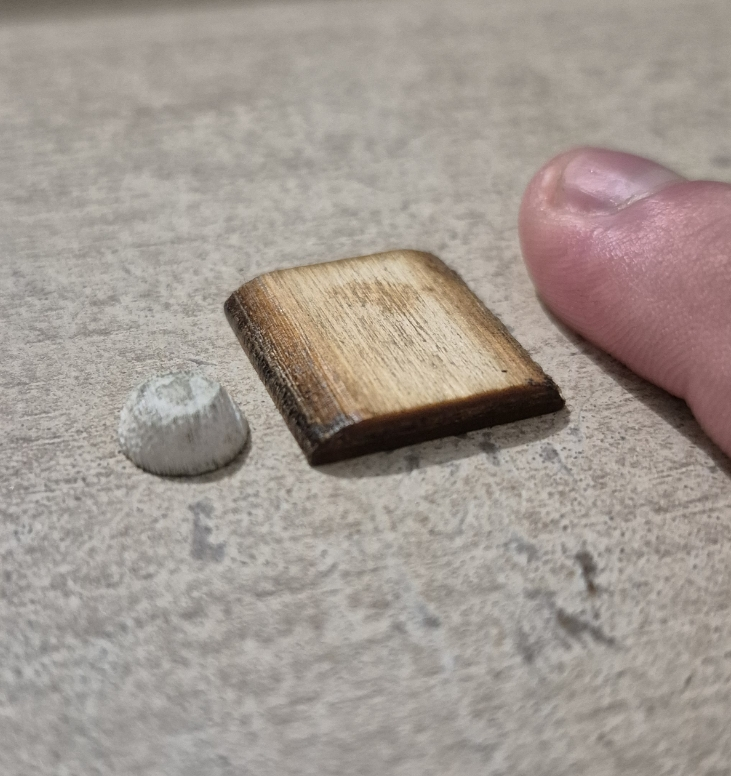
Objectif
Les découpeuses laser classiques sont pensées pour couper au trait ou graver en surface. J'ai voulu aller plus loin : sculpter en profondeur, contrôler la forme, créer des arrondis. En gros : utiliser une machine 2D comme si elle travaillait en 3D.
Travail chaque vendredi matin au labo, puis reprise en 2024 pour finaliser les arrondis.
Ce que j'ai fait
- Réglage fin de la puissance laser selon la profondeur cible.
- Tests de refroidissement / pauses pour éviter la surchauffe du matériau.
- Génération de dégradés de gris avec Inkscape pour contrôler la profondeur locale.
- Comparaison bois vs plexiglas : comportements thermiques très différents.
Résultat
J'ai réussi à produire des arrondis réels, un creusage volumique — pas juste une gravure plate. Le process doit être surveillé : la chauffe monte très vite sans pauses.
Le plexiglas est plus propre à travailler que le contreplaqué (la chaleur peut faire fondre la colle interne du bois reconstitué).
Ce que j'ai appris
Sortir une machine de son cadre d'origine. Comprendre la courbe de puissance dans la matière selon la profondeur. Optimiser une séquence d'usinage laser comme si c'était un usinage CNC multi-passes.
Stack utilisée
Galerie
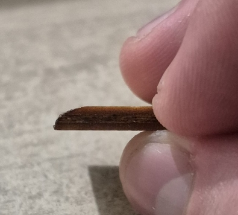
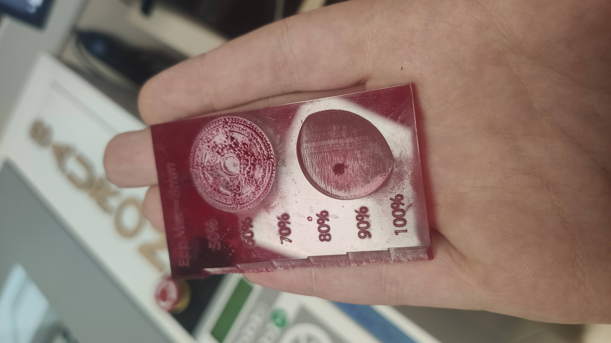
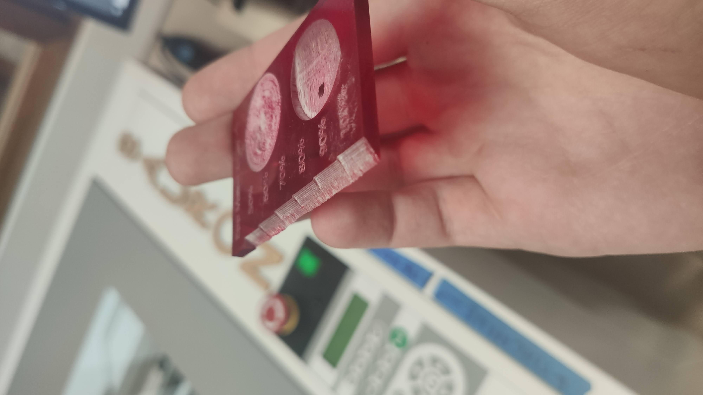
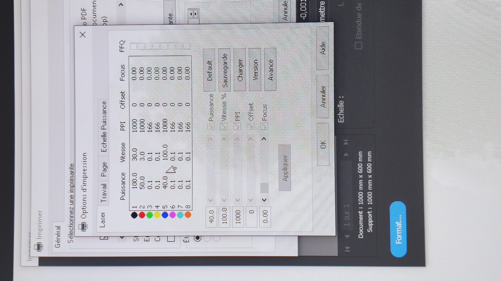
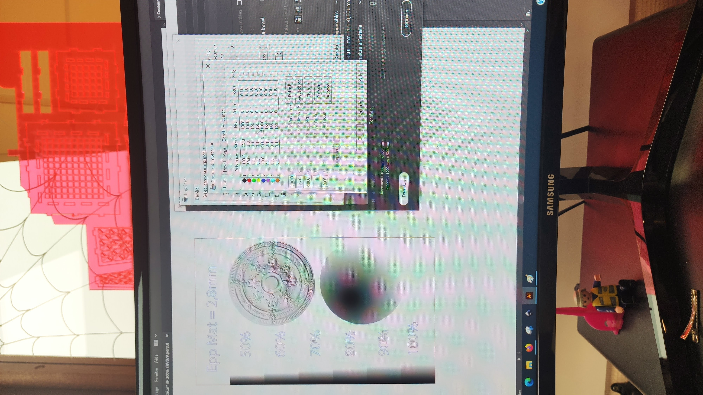
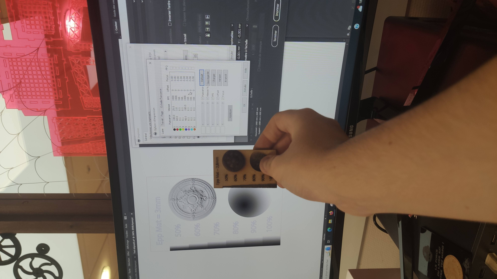
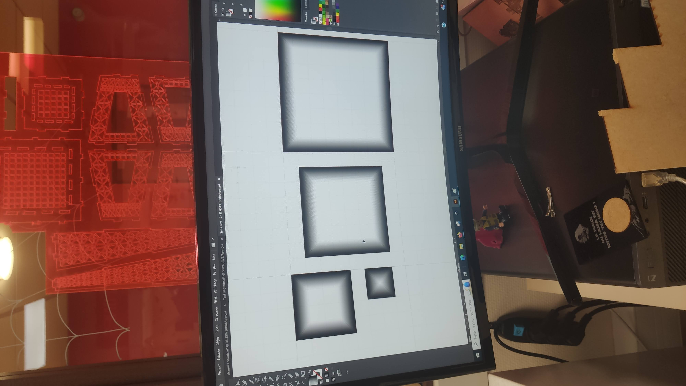
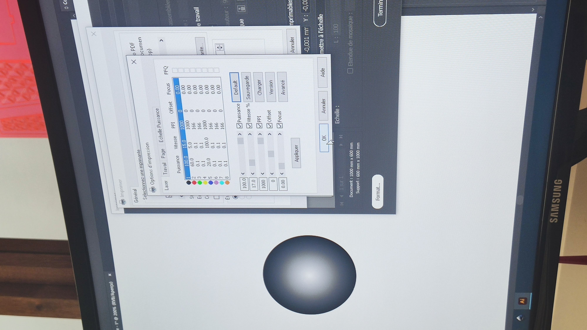
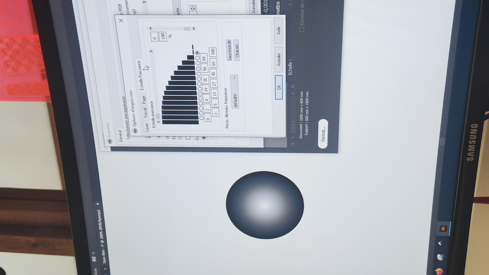
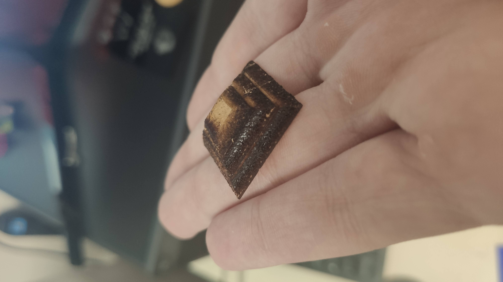